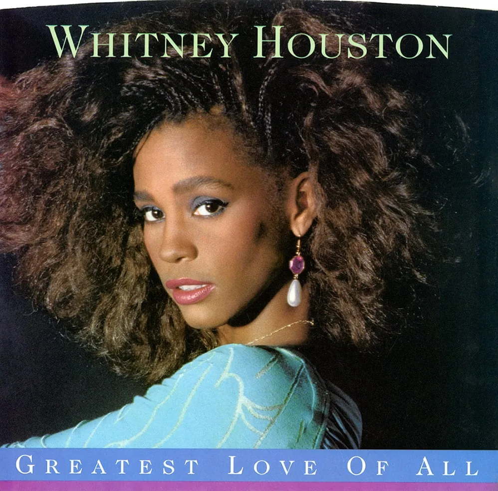

안녕하세요 라보엠입니다.
마이클 볼튼을 시작으로 옛날 팝송을 찾아 듣고 있습니다. 최고의 목소리를 가진 남자 가수에 마이클 볼튼이 있다면, 천상의 목소리를 가진 여자 가수는 휘트니 휴스턴 (Whitney Houston) 이 아닐까 싶습니다. 10여년전 아쉽게도 우리 곁을 떠났지만 그녀의 목소리는 우리 마음속에 남아 있습니다. 오늘 소개해드릴 노래는 그녀의 히트곡중 하나인 Greatest Love of All 입니다.
Greatest Love Of All - 휘트니 휴스턴 (Whitney Houston)
Greatest Love Of All - Lyrics 가사
I believe the children are our future
Teach them well and let them lead the way
Show them all the beauty they possess inside
Give them a sense of pride to make it easier
Let the children's laughter remind us how we used to be
아이들이 우리의 미래라고 믿습니다.
아이들을 잘 가르치고 그들이 앞장서게 하세요.
아이들의 내면에 있는 모든 아름다움을 보여주세요.
아이들에게 자부심을 심어주세요.
아이들의 웃음소리가 우리의 예전 모습을 떠올리게 합니다.
Everybody searching for a hero
People need someone to look up to
I never found anyone who fulfill my needs
A lonely place to be
And so I learned to depend on me
영웅을 찾는 모든 사람
사람들은 존경할 사람이 필요합니다
나의 필요를 채워줄 사람을 찾지 못했어요
외로운 곳
그래서 나는 나에게 의지하는 법을 배웠어
I decided long ago
Never to walk in anyone's shadows
If I fail, if I succeed
At least I'll live as I believe
No matter what they take from me
They can't take away my dignity
오래 전에 결심했습니다.
누구의 그림자도 밟지 않겠다고요.
내가 실패해도, 성공해도
적어도 난 내 신념대로 살 거에요
그들이 내게서 무엇을 빼앗아 가더라도
그들은 내 존엄성을 빼앗을 수 없어.
Because the greatest love of all
Is happening to me
I found the greatest love of all
Inside of me
가장 위대한 사랑이
내게 일어나고 있거든
난 가장 위대한 사랑을 찾았어
내 안에서
The greatest love of all
Is easy to achieve
Learning to love yourself
It is the greatest love of all
가장 위대한 사랑
그건은 쉬운 달성
자신을 사랑하는 법 배우기
가장 위대한 사랑
I believe the children are our future
Teach them well and let them lead the way
Show them all the beauty they possess inside
Give them a sense of pride to make it easier
Let the children's laughter remind us how we used to be
아이들이 우리의 미래라고 믿습니다.
아이들을 잘 가르치고 그들이 앞장서게 하세요.
아이들의 내면에 있는 모든 아름다움을 보여주세요.
아이들에게 자부심을 심어주세요.
아이들의 웃음소리가 우리의 예전 모습을 떠올리게 합니다.
I decided long ago
Never to walk in anyone's shadows
If I fail, if I succeed
At least I'll live as I believe
No matter what they take from me
They can't take away my dignity
오래 전에 결심했습니다.
누구의 그림자도 밟지 않겠다고요.
내가 실패해도, 성공해도
적어도 난 내 신념대로 살 거에요
그들이 내게서 무엇을 빼앗아 가더라도
그들은 내 존엄성을 빼앗을 수 없어.
Because the greatest love of all
Is happening to me
I found the greatest love of all
Inside of me
가장 위대한 사랑이
내게 일어나고 있거든
난 가장 위대한 사랑을 찾았어
내 안에서
The greatest love of all
Is easy to achieve
Learning to love yourself
Is the greatest love of all
가장 위대한 사랑
그건은 쉬운 달성
자신을 사랑하는 법 배우기
가장 위대한 사랑
And if, by chance, that special place
That you've been dreaming of
Leads you to a lonely place
Find your strength in love
그리고 우연히도, 그 특별한 장소가
당신이 꿈꿔왔던
당신을 외로운 곳으로 이끈다면
사랑으로 힘을 내세요
Greatest Love Of All - 간략 후기
1985년 휘트니 휴스턴의 첫번째 정규앨범에 수록된 곡으로 그녀의 별명이 The Voice 라고 불렸던 것으로 알 수 있듯이 그녀는 목소리의 화신이었으며 오페라의 주역에게 사용되던 디바(Diva)라는 용어를 대중음악계에 들여오게된 인물입니다. 팝송 디바의 원조라고 할 수 있겠습니다. Greatest Love of All 은 그녀의 초창기 노래중 하나로 86년에 발매되어 3주간 빌보드차트 1위를 당성한 노래입니다. 영화 보디가드(1992)에서 부른 I will always love you 가 나오기전 빌보드 1위를 가장 오래 유지한 곡이기도 합니다. 원곡은 조지 벤슨이 발표한 1977년 앨범 Muhammad Ali in "The Greatest" 에 수록된 곡이며 이를 휘트니 휴스턴이 리메이크했습니다.
